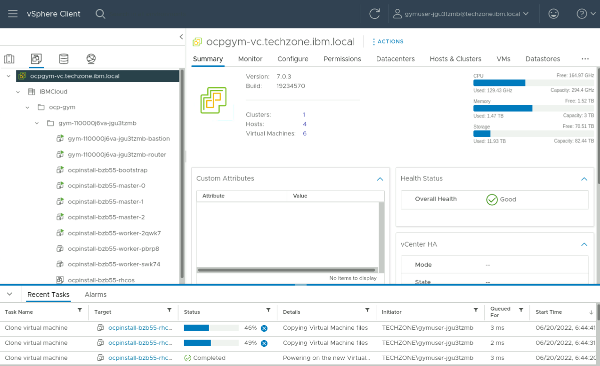

Customize and Install the OpenShift Cluster¶
-
Create the installation directory (by convention named after the cluster).
-
Copy the Install Config asset into the installation directory.
-
Create manifests.
-
Copy the worker MachineSet manifest to create an Infrastructure MachineSet
-
Edit
ocpinstall/openshift/99_openshift-cluster-api_infra-machineset-0.yamland make the following changes:- Add labels to the nodes, within the
spec.template.spec.metadata.labelssection:cluster.ocs.openshift.io/openshift-storage: ''node-role.kubernetes.io/infra: ''
- Add taint
node.ocs.openshift.io/storagewith value oftrueand effectNoScheduleto the nodes. - Change all values with postfix
-worker-0to-infra-0. - Change the value of
machine.openshift.io/cluster-api-machine-roleandmachine.openshift.io/cluster-api-machine-typetoinfra. - Change
memoryMiBto65536. - Change
numCPUsto16. - Change
numCoresPerSocketto2. - Change
replicasto3
- Add labels to the nodes, within the
-
Create the cluster.
Information
We are suggesting you use --log-level debug in order to gain some experience with what is actually happening during the IPI installation process. The default log level is info; which is more typically used once you have experience with the process. A log file named .openshift-install.log is kept in the install directory .
Wait for the installation to complete.
Example output#... INFO All cluster operators have completed progressing INFO Checking to see if there is a route at openshift-console/console... DEBUG Route found in openshift-console namespace: console DEBUG OpenShift console route is admitted INFO Install complete! INFO To access the cluster as the system:admin user when using 'oc', run 'export KUBECONFIG=/home/admin/ocpinstall/auth/kubeconfig' INFO Access the OpenShift web-console here: https://console-openshift-console.apps.ocpinstall.gym.lan INFO Login to the console with user: "kubeadmin", and password: "AaaJH-tkqHF-VWDvh-cPku2" DEBUG Time elapsed per stage: DEBUG pre-bootstrap: 1m19s DEBUG bootstrap: 57s DEBUG master: 2m45s DEBUG Bootstrap Complete: 16m45s DEBUG API: 54s DEBUG Bootstrap Destroy: 36s DEBUG Cluster Operators Available: 9m47s DEBUG Cluster Operators Stable: 5m32s INFO Time elapsed: 37m48sTip
- When using WireGuard ensure your laptop does not go to sleep and that the SSH session remains open, otherwise this can interrupt the installer.
- Consider installing and using tmux to minimize network disruptions and timeouts.
Monitor Progress During Installation¶
Monitor using the vSphere console¶
-
Log into the vSphere console.
Use the vCenter Console URL, username and password from your reservation and log into the vSphere console.
-
Select the VMs and Templates section on the left-hand side of vSphere:
Expand IBMCloud > ocp-gym.
You will then be able to find your user's folder, where the virtual machines will appear during the installation.
Note
You can see that there are already two virtual machines present in your folder! The first one is the VM that is your bastion, which is the one you're using now. The other is a router VM that is hosting the routing and DNS components that are needed for your cluster.
During the installation, on the vSphere console, you will be able to see the virtual machines for your OpenShift cluster being created.

The OpenShift installer will first create the bootstrap node and the master nodes and power them on.
Clicking on one of the VMs will display further information on the right-hand side of the console.
Once these are running and configured, the OpenShift installer will create, start and configure the worker nodes. Typically the workers are created 10-15 minutes after the masters.
The workers will appear in the same section as the master nodes and the bootstrap node. 
{kind=link}
{kind=link}
{kind=link}
{kind=link}
Monitor using the OpenShift CLI¶
You can start following the installation progress with the CLI after the API server is available.
-
Open a new Terminal.
-
Set up
system:adminaccess for the cluster. -
Issue the following watch command.
Tip
- During the installation it is normal for the status field to occasionally show errors.
- The authentication operator is usually the last one to come up, and it may take 15-20 minutes after all the other operators are available, so don't panic. The console operator is usually next to last.
Verify Cluster Health¶
Access the OpenShift Web console¶
-
Open https://console-openshift-console.apps.ocpinstall.gym.lan in a browser and accept the self-signed certificates.
-
Log in using the credentials (available from the OpenShift installer output).

The OpenShift Web console will then display:
-
Click on the Control Plane and Operators in the Status window.
{kind=link}
{kind=link}
Access the Cluster Using the OpenShift CLI¶
-
Log in as user
kubeadmin.Example OutputWARNING: Using insecure TLS client config. Setting this option is not supported! Console URL: https://api.ocpinstall.gym.lan:6443/console Authentication required for https://api.ocpinstall.gym.lan:6443 (openshift) Username: kubeadmin Password: Login successful. You have access to 70 projects, the list has been suppressed. You can list all projects with 'oc projects' Using project "default". -
List the nodes.
Example OutputNAME STATUS ROLES AGE VERSION ocpinstall-ntfsr-infra-0-5bfqj Ready infra,worker 18m v1.28.6+6216ea1 ocpinstall-ntfsr-infra-0-cscfp Ready infra,worker 18m v1.28.6+6216ea1 ocpinstall-ntfsr-infra-0-p42ml Ready infra,worker 18m v1.28.6+6216ea1 ocpinstall-ntfsr-master-0 Ready control-plane,master 32m v1.28.6+6216ea1 ocpinstall-ntfsr-master-1 Ready control-plane,master 32m v1.28.6+6216ea1 ocpinstall-ntfsr-master-2 Ready control-plane,master 32m v1.28.6+6216ea1 ocpinstall-ntfsr-worker-0-mzsp6 Ready worker 18m v1.28.6+6216ea1 ocpinstall-ntfsr-worker-0-n747f Ready worker 18m v1.28.6+6216ea1 ocpinstall-ntfsr-worker-0-hsh87 Ready worker 18m v1.28.6+6216ea1 -
Display CPU and memory usage of each node.
Example OutputNAME CPU(cores) CPU% MEMORY(bytes) MEMORY% ocpinstall-ntfsr-infra-0-5bfqj 112m 0% 2071Mi 3% ocpinstall-ntfsr-infra-0-cscfp 109m 0% 2091Mi 3% ocpinstall-ntfsr-infra-0-p42ml 112m 0% 2078Mi 3% ocpinstall-ntfsr-master-0 511m 14% 6074Mi 40% ocpinstall-ntfsr-master-1 527m 15% 6393Mi 42% ocpinstall-ntfsr-master-2 396m 11% 4457Mi 29% ocpinstall-ntfsr-worker-0-mzsp6 283m 3% 4301Mi 28% ocpinstall-ntfsr-worker-0-n747f 408m 5% 4142Mi 27% ocpinstall-ntfsr-worker-0-hsh87 408m 5% 4142Mi 27% -
List the cluster operators.
Example OutputNAME VERSION AVAILABLE PROGRESSING DEGRADED SINCE MESSAGE authentication 4.17.3 True False False 10m baremetal 4.17.3 True False False 61m cloud-controller-manager 4.17.3 True False False 69m cloud-credential 4.17.3 True False False 92m cluster-autoscaler 4.17.3 True False False 61m config-operator 4.17.3 True False False 63m console 4.17.3 True False False 15m control-plane-machine-set 4.17.3 True False False 61m csi-snapshot-controller 4.17.3 True False False 63m dns 4.17.3 True False False 59m etcd 4.17.3 True False False 25m image-registry 4.17.3 True False False 52m ingress 4.17.3 True False False 18m insights 4.17.3 True False False 55m kube-apiserver 4.17.3 True False False 56m kube-controller-manager 4.17.3 True False False 56m kube-scheduler 4.17.3 True False False 56m kube-storage-version-migrator 4.17.3 True False False 63m machine-api 4.17.3 True False False 18m machine-approver 4.17.3 True False False 61m machine-config 4.17.3 True False False 25m marketplace 4.17.3 True False False 61m monitoring 4.17.3 True False False 11m network 4.17.3 True False False 64m node-tuning 4.17.3 True False False 16m openshift-apiserver 4.17.3 True False False 25m openshift-controller-manager 4.17.3 True False False 56m openshift-samples 4.17.3 True False False 56m operator-lifecycle-manager 4.17.3 True False False 61m operator-lifecycle-manager-catalog 4.17.3 True False False 61m operator-lifecycle-manager-packageserver 4.17.3 True False False 55m service-ca 4.17.3 True False False 63m storage 4.17.3 True False False 25m
Access Cluster Nodes¶
You can ssh into the worker and master nodes once the virtual machines have been created. The user to SSH with is named core. The SSH key you use will be the private half of the key pair of which the public half you provided in the install-config.yaml file.
-
Get the external IP addresses of the nodes.
Example OutputNAME EXTERNALIP ocpinstall-ntfsr-infra-0-5bfqj 192.168.252.139 ocpinstall-ntfsr-infra-0-cscfp 192.168.252.135 ocpinstall-ntfsr-infra-0-p42ml 192.168.252.137 ocpinstall-ntfsr-master-0 192.168.252.132 ocpinstall-ntfsr-master-1 192.168.252.134 ocpinstall-ntfsr-master-2 192.168.252.133 ocpinstall-ntfsr-worker-0-mzsp6 192.168.252.136 ocpinstall-ntfsr-worker-0-n747f 192.168.252.138 ocpinstall-ntfsr-worker-0-hsh87 192.168.252.138 -
Log in to one of the nodes.
Example OutputThe authenticity of host '192.168.252.132 (192.168.252.132)' can't be established. ED25519 key fingerprint is SHA256:39TmjFLNRRmncEWcvEuLV75DTuFVPWQI0G5p0BHTmKA. This key is not known by any other names Are you sure you want to continue connecting (yes/no/[fingerprint])? yes Warning: Permanently added '192.168.252.132' (ED25519) to the list of known hosts. Red Hat Enterprise Linux CoreOS 417.94.202410211619-0 Part of OpenShift 4.17, RHCOS is a Kubernetes native operating system managed by the Machine Config Operator (`clusteroperator/machine-config`). WARNING: Direct SSH access to machines is not recommended; instead, make configuration changes via `machineconfig` objects: https://docs.openshift.com/container-platform/4.17/architecture/architecture-rhcos.html --- -
Check if the kubelet is active.
-
Log out.